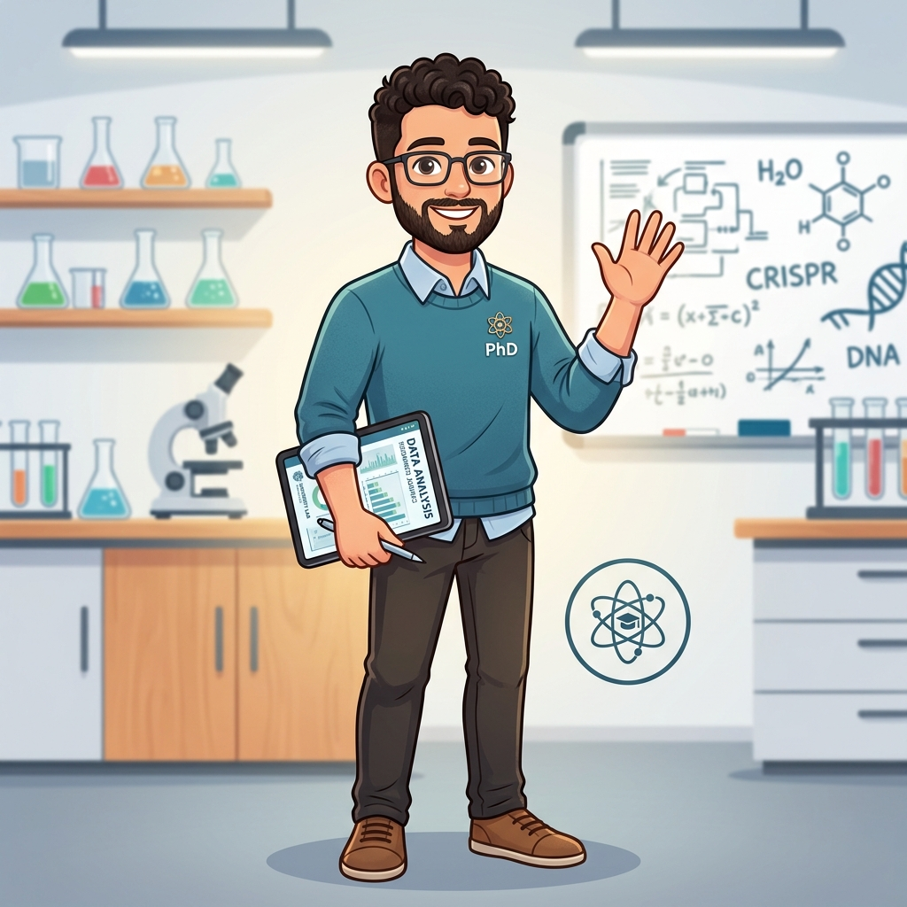

Welcome to my personal corner! I'm Pavlos Panos, a PhD Candidate in Biomedical Engineering at the University of Basel, Switzerland. My current research focuses on developing novel methods for Lung Magnetic Resonance Imaging (MRI), bridging the gap between advanced physics and clinical diagnostics.
Before transitioning to medical imaging, I spent years at the forefront of Particle Physics as a researcher for the CMS Experiment at CERN. I take great pride in academic excellence, having graduated 1st in my class for both my BSc and MSc at the National and Kapodistrian University of Athens.
Beyond the lab and the code, I am a passionate enthusiast of the Piano and Chess, and more recently, I have started exploring the rich world of Wine Tasting.
What I Do
Medical Imaging & MRI Physics
Developing next-generation **balanced Steady-State Free Precession (bSSFP)** shimming and super-resolution image enhancement for human lung MRI at 3T and 0.55T.
High Energy Physics Analysis
Advanced Machine Learning deployment for **Dijet Resonance Searches** and track reconstruction using Graph Neural Networks (GNNs) at the CMS experiment, CERN.
Deep Learning & Data Science
Expertise in Multi-Layer Perceptrons, LSTMs, and Super-Resolution applied to complex scientific data.
Numerical Simulations (FDTD/MC)
Simulation of complex physical phenomena using Monte Carlo and Finite-Difference Time-Domain methods.

--------------
Resume
Education
PhD Candidate in Biomedical Engineering
University of Basel, Switzerland
July 2024 — Present
Focus: Novel Methods for Lung Magnetic Resonance Imaging. Researching next-generation shimming and image enhancement techniques.
MSc Nuclear and Particle Physics
National and Kapodistrian University of Athens
September 2022 — March 2024
Grade: 9.67/10 (Excellent) - Ranked 1st in class Thesis: Development of Machine Learning techniques for resonance searches in events with four jets in the final state collected by the CMS experiment at the CERN LHC.
(Supervisor: Associate Professor Niki Saoulidou)
National & Kapodistrian University of Athens
Bachelor's degree, Elementary Particle Physics
September 2018 — September 2022
Grade: 8.95/10 (Excellent) - Ranked 1st in class (Awarded Scholarship of Excellence - IKY)
Thesis: Optimization of jet pairing of the pared dijet resonance search with the CMS experiment at the CERN LHC using machine learning.
38th High school of Athens
2015-2018
Grade: 19.9/20 (Excellent)
Experience
Researcher / Data Analyst for the CERN LHC
Hellenic Foundation for Research and Innovation (HFRI)
November 2022 — September 2023
Collaborated with the CMS experiment team to enhance resonance searches using Machine Learning (MLPs). Optimized jet pairing techniques and signal-to-background selection criteria, significantly improving experimental precision.
Teacher - Private Tutor
2018 — Present
Providing additional academic support to high school and university students in Greece through private tutoring and supplementary courses.
Rapid Free-Breathing and Automated 2D Shimming of the Lung at 3T
2026
Magnetic Resonance in Medicine (Magn Reson Med) View Publication
Conference Proceedings
Active shimming of the lung for mitigation of bSSFP banding artifacts at high fields
May 2025
ISMRM 2025, Hawaii — e-Poster Presentation
Super-Resolution Image Enhancement for 3D Morphological Lung MRI with bSTAR at 0.55T
May 2025
ISMRM 2025, Hawaii — PowerPitch Presentation
Passions & Interests
Wine Tasting
My journey into Oenology is driven by a scientific curiosity for chemistry and terroir. I am currently building my knowledge in sensory analysis and regional variations.
Current Study
Exploring Pinot Noirs from Valais and Old World structures.
Tasting Log
Vintage
Region
Rating
Pinot Noir 2021
Valais, CH
★★★★☆
Chasselas 2022
Vaud, CH
★★★☆☆
Piano & Chess
The Piano
Classical training with a focus on Romantic era composers.
Chess
Competitive player focusing on positional theory and end-game tactics.